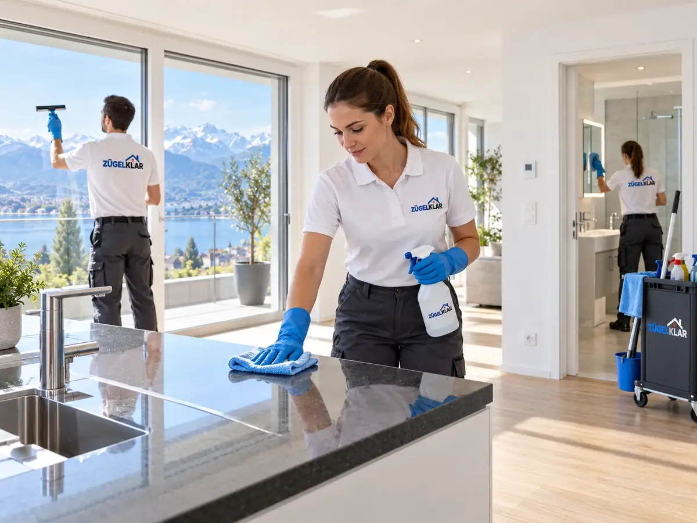

Umzugsreinigung mit Abnahmegarantie im Aargau
Die Wohnungsabgabe ist der Moment, der zählt. Bei gebuchter Abnahmegarantie bessern wir berechtigte Beanstandungen der Verwaltung kostenlos nach – im vereinbarten Leistungsumfang. Sie zahlen keine zweite Reinigung.

SymbolbildSo funktioniert die Abnahmegarantie
Beanstandet die Verwaltung oder Vermieterschaft berechtigt einen Punkt, der zum vereinbarten Reinigungsumfang gehört, kommen wir zurück und reinigen kostenlos nach. Das gilt auch, wenn die Rechnung bereits bezahlt ist.
Damit die Garantie greift, sollte die Wohnungsabgabe grundsätzlich innert drei Arbeitstagen nach der Reinigung stattfinden. Findet sie später statt, gilt die Garantie nur, soweit das Objekt in der Zwischenzeit nicht genutzt, verändert oder neu verschmutzt wurde. Die Abnahmegarantie muss in der Offerte ausdrücklich enthalten sein.
Klar definierter Umfang statt Rätselraten
Vor der Ausführung steht in der Offerte, was gereinigt wird. So weiss bei der Abgabe jede Seite, was vereinbart war.
Was nicht in der Offerte steht, ist nicht Teil der Abnahmegarantie. Deshalb lohnt es sich, Nebenräume wie Keller, Estrich, Garage oder Waschküchenanteil ausdrücklich zu nennen, wenn sie gereinigt werden sollen.
- Räume, Nebenräume und Flächen gemäss Offerte
- Fenster, Storen und Jalousien
- Küche und Geräte
- Bad, WC und Sanitärbereiche
- Balkon oder Terrasse, sofern vereinbart
Was die Abnahmegarantie nicht umfasst
Die Garantie betrifft ausschliesslich die Reinigung. Eine Zusage, dass die Verwaltung die Wohnung in jedem Fall abnimmt, gibt es nicht – und kann es seriöserweise nicht geben.
- bauliche Schäden, Defekte, Kratzer und normale Abnutzung
- dauerhafte Verfärbungen oder Flecken, die nicht ohne Beschädigungsrisiko entfernbar sind
- Schimmel, defekte Fugen und Silikon sowie Reparaturarbeiten
- Verschmutzungen, die nach der Reinigung entstehen, etwa durch Bewohner, Handwerker oder Wetter
- Forderungen, die über den vereinbarten Reinigungsumfang hinausgehen
Umzug und Reinigung beim selben Team
Viele Kundinnen und Kunden kombinieren den Privatumzug mit der Umzugsreinigung. Das spart Koordination: Die Reinigung wird zeitlich auf den Auszug abgestimmt, und am Abgabetag gibt es keine Schuldzuweisungen zwischen zwei Firmen.
Für eine verlässliche Offerte brauchen wir Angaben zu Zimmerzahl, Fenstern, Storen, Balkon, Geräten und zum Verschmutzungsgrad. Fotos per WhatsApp helfen dabei.
Bitte melden Sie besondere Verschmutzungen vorab, etwa starke Nikotinrückstände, Tierverunreinigungen, massive Fettablagerungen, Klebereste oder Schimmel. So können wir sie korrekt offerieren, und es gibt am Reinigungstag keine Überraschungen. Ist die Wohnung leer und sind Strom, Wasser und Zugang sichergestellt, kann die Reinigung wie geplant ausgeführt werden. Danach steht der Wohnungsabgabe aus Reinigungssicht nichts mehr im Weg.
Häufige Fragen
Was passiert, wenn die Verwaltung bei der Abgabe etwas beanstandet?
Melden Sie die Beanstandung möglichst direkt bei der Abgabe, idealerweise mit Übergabeprotokoll oder Fotos. ZÜGELKLAR erhält zuerst die Gelegenheit zur kostenlosen Nachreinigung im vereinbarten Umfang.
Muss jemand von ZÜGELKLAR bei der Wohnungsabgabe dabei sein?
Nur, wenn das ausdrücklich vereinbart wurde. In diesem Fall muss der Abgabetermin rechtzeitig mitgeteilt und von uns bestätigt werden.
Muss die Wohnung für die Umzugsreinigung leer sein?
Ja, soweit nichts anderes vereinbart ist. Strom, Wasser und Zugang müssen verfügbar sein; blockierte Bereiche können nicht gereinigt werden.